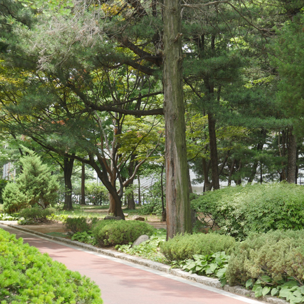

-
mom
labal -
momlabel도산공원

1,745
#일상스타그램#압구정로데오#도산공원#도산기념관#점심시간#도산공원산책
한낮의 도심 속 힐링 산책로
나른한 오후, 가벼운 산책으로 그날의 기분을 올려보는 건 어떨까? 일상에서 시간을 정해놓고 혹은 맘 잡고 운동하기란 쉽지 않다. 이럴 땐 부담없이 가볍게 할 수 있는 운동부터 시작하길 추천한다. 식후에 하는 걷기는 소화를 도와주고, 건강에도 도움을 준다. 스탠포드 대학의 연구에 따르면 걷기는 창의성에 직접적인 향상을 가져오고, 뇌의 퇴화를 예방하며 뇌 기능을 향상시켜준다고 한다. 뿐만 아니라 산책을 하며 햇빛을 받으면 세로토닌의 분비를 촉진시켜 행복감을 느끼게 한다. 15-20분 정도의 가벼운 산책은 비타민D의 흡수를 돕기 때문에 부담 없이 즐겨도 된다.


맛있는 점심 후, 삼삼오오 모여 산책로를 걷고 있는 모습을 어렵지 않게 볼 수 있다. 가벼운 걷기 운동으로 도산공원을 산책해보자. 산책길 옆으로 안창호 선생과 부인 이혜련 여사의 묘소, 동상, 기념관 등이 있는 도산공원은 도산 안창호 선생의 애국정신과 교육정신을 기리고자 조성한 공원이기도 하다.. 중간중간 앉아서 쉴 수 있는 벤치와 가벼운 운동을 즐길 수 있는 기구도 있으니, 몸의 리듬을 깨워주고 정신을 맑게 해줄 수 있는 코스로 안성맞춤이다.
- Editor. 김다인